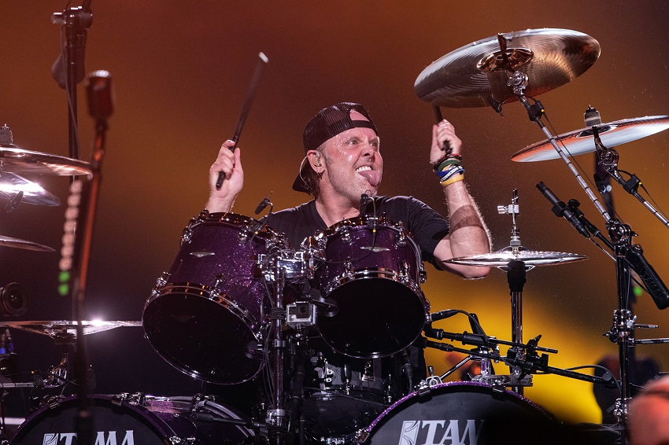

Lars Ulrich
Lars Ulrich (Gentofte, 26 de diciembre de 1963) es un músico danés conocido principalmente por ser el baterista, compositor, fundador y líder (junto a James Hetfield) de la banda de thrash metal estadounidense Metallica.
Lars Ulrich (Gentofte, 26 de diciembre de 1963) es un músico danés conocido principalmente por ser el baterista, compositor, fundador y líder (junto a James Hetfield) de la banda de thrash metal estadounidense Metallica.